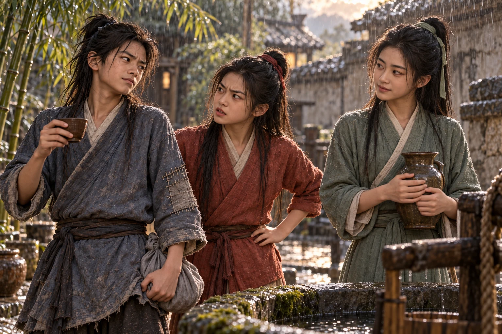
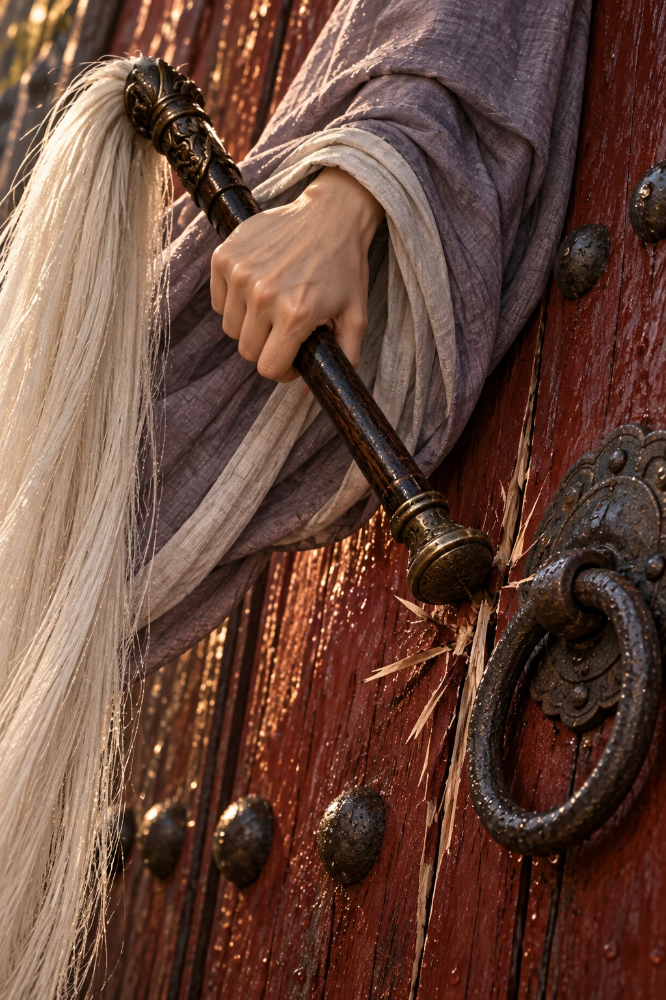
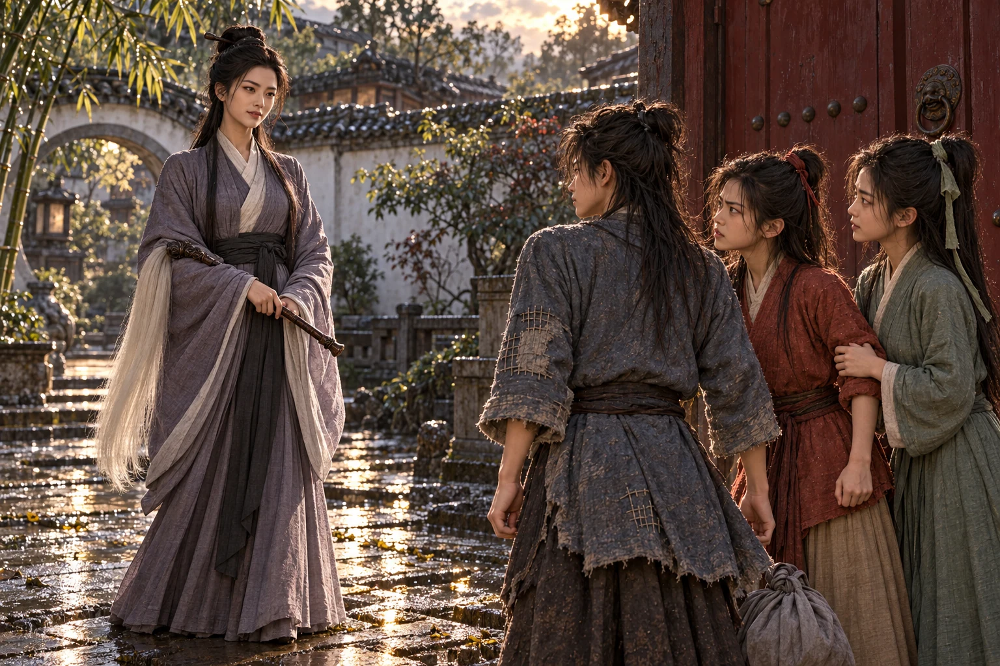
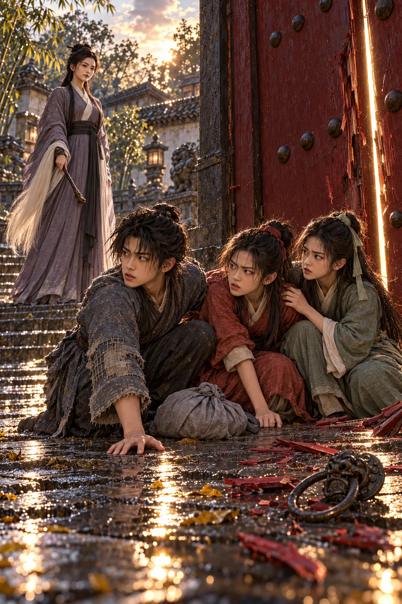
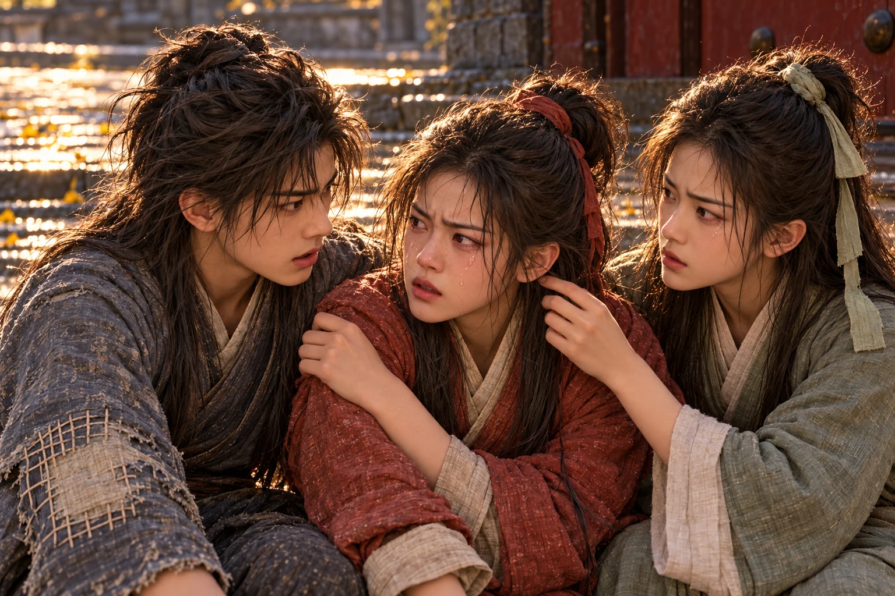
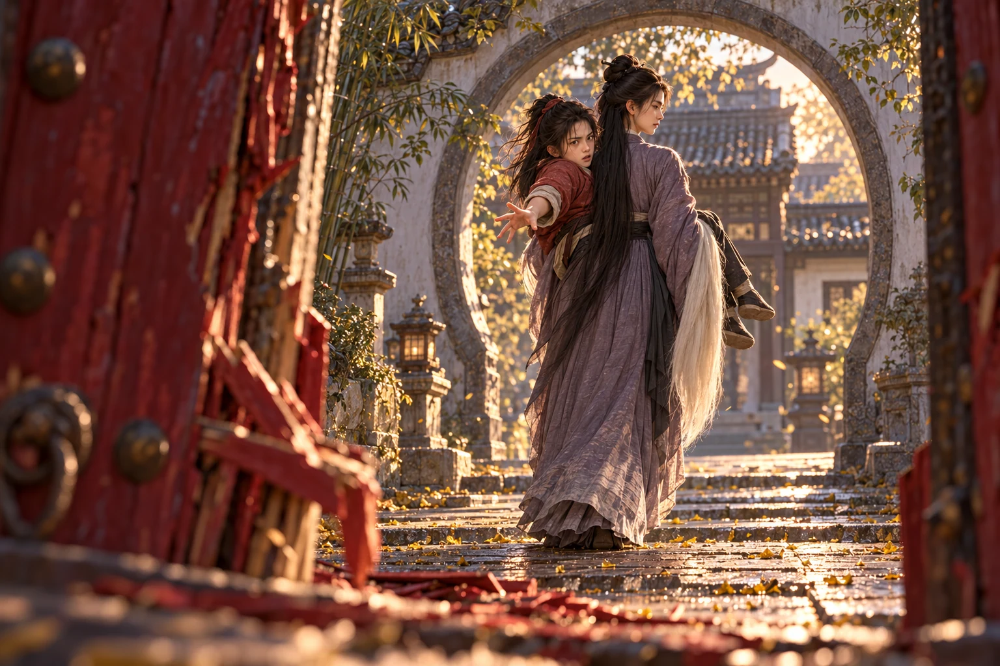
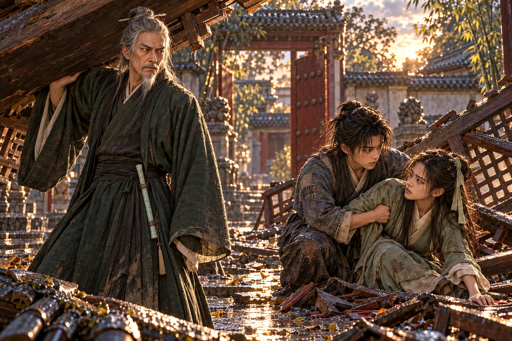

menemukan sumur itu ketika tenggorokannya sudah terasa seperti penuh pasir. Ia memperlambat langkah di gerbang, merapikan bajunya sebelum meminta pertolongan kepada penghuni rumah.
Seorang gadis berbaju merah kesemek sedang menarik ember. Talinya tersangkut pada bibir sumur; setiap kali ia menyentak, air di dalamnya tumpah. Dani berhenti di luar pagar rendah dan mengangkat tangan supaya kedatangannya tidak disangka hendak mencuri.
“Nona, bolehkah aku meminta air? Kalau ember itu terus kauajak bertengkar, kita berdua akan kehausan sampai petang.”
Gadis itu menoleh dengan kening berkerut. “Siapa yang bertengkar? Kalau ingin minum, katakan saja. Tidak perlu mengajariku mengambil air di rumahku sendiri.”
“Wushuang, kendurkan talinya dahulu,” kata gadis lain dari serambi. Pakaiannya hijau pucat, dan di tangannya ada sebuah cawan. “Embernya miring. Makin kautarik, makin sulit dilepaskan.”
“Kak Ying selalu membelanya sebelum tahu siapa yang salah.”
“Aku sedang membicarakan ember, bukan membela tamu kita.”
Dani menahan senyum. Ketika gadis berbaju merah mengendurkan tali, ia membantu mengangkat ember dari sisinya. Gadis berbaju hijau menuangkan air dan memberikannya kepadanya. Ia meminum setengah cawan sebelum ingat mengucapkan terima kasih.
“Namaku ,” ujar gadis itu. “Ini sepupuku, . Engkau datang seorang diri?”
“Dani Moan. Aku baru meninggalkan rumah.” Ia menaruh buntalan di antara kedua kakinya. “Di sini mudah sekali menemukan orang yang baik hati. Yang seorang memberi minum, yang seorang memastikan aku tidak terlalu senang menerimanya.”
Wushuang mendengus. “Minum saja, lalu kembalikan cawannya.”

Cheng Ying melirik tambalan yang terlepas pada lengannya. “Kalau engkau belum makan, aku dapat meminta sesuatu dari dapur.”
Dani hendak menerima tawaran itu ketika terdengar benturan dari arah gerbang depan. Bunyinya tidak keras, tetapi menyusulnya seekor burung terbang dari pucuk tembok. Wushuang menoleh, kesal karena percakapan mereka terputus.
“Barangkali tamu Ayah. Kak Ying, aku akan memberitahukan kepada Ibu.”
“Biarlah aku melihat dahulu,” kata . “Aku sudah memperoleh air. Setidaknya aku dapat membalas dengan membuka pintu.”
Ia meninggalkan buntalan dekat sumur. Dari sisi serambi, gerbang depan terlihat melalui lorong pendek. Seorang perempuan berjubah kelabu keunguan berdiri di luarnya. Ia cantik, dengan sanggul tinggi dan putih yang seolah tidak mempunyai berat. Perempuan itu sedang menempelkan dua jari pada kayu di dekat gelang besi.
Bukan seluruh daun pintu yang roboh. Kayunya retak sepanjang serat, sedangkan gelangnya turun perlahan bersama serpihan yang masih melekat. Dani berhenti sebelum bayangannya mencapai ambang.

Perempuan itu mengangkat mata. “Adik kecil, apakah keluarga Lu menerima tamu hari ini?”
Suaranya ramah. Dani justru mundur setapak. Ia melihat kayu yang retak, lalu dua jari perempuan itu yang bersih. Tamu yang ingin dipersilakan masuk tidak perlu merusak pintu. Aku harus membawa kedua gadis itu menjauh, pikirnya. Ia belum mengetahui siapa yang datang, tetapi tidak ingin menunggu sampai perempuan itu menunjukkan maksudnya.
“Aku hanya singgah meminta minum, Bibi. Kalau hendak menemui tuan rumah, biar kupanggilkan.”
“Sungguh anak yang tahu adat. Panggillah seluruh keluarganya. Aku tidak ingin seorang pun merasa dilupakan.”
Dani membungkuk, lalu kembali dengan langkah yang sengaja ditahannya. Ia baru berlari setelah melewati tikungan. Wushuang masih berada di dekat sumur; Cheng Ying sudah membawa sepotong makanan di atas piring.
“Ada perempuan di gerbang. Jangan ke sana,” bisik Dani.
mengerutkan hidung. “Rumah kami kedatangan tamu, mengapa engkau yang ketakutan?”
“Ia mematahkan kayu dengan dua jari. Aku melihatnya sendiri. Beri tahu orang tuamu, lalu tunjukkan pintu yang lain.”
meletakkan piring. Wajahnya berubah ketika melihat Dani sungguh-sungguh. Ia menarik sepupunya dari sumur.
“Kak Ying, kalau kita lari setiap ada orang membawa senjata—”
“Aku akan memberitahukan Paman. Engkau ambil selendangmu dan tunggu di belakang,” potong Cheng Ying. “Kalau ternyata kami keliru, nanti aku yang menjelaskan.”
menyambar buntalannya. Dari lorong depan terdengar suara lelaki menyebut sebuah nama dengan nada yang membuat bulu tengkuknya berdiri: .
Perempuan itu menjawab sesuatu. Lalu terdengar kursi jatuh.
Pintu belakang mengembang karena lembap. Wushuang menarik gelangnya sementara Dani menekan bagian bawah dengan bahu. Di antara dua sentakan, ia mendengar suara langkah Cheng Ying berlari mendekat.
“Paman menyuruh kita keluar,” kata gadis itu. “Dani, apakah pintunya dapat dibuka?”
“Kalau pemilik rumah berjanji tidak menagih ganti rugi, akan kucoba merusaknya.”
“Rusakkan saja!” Wushuang menyerahkan gelang besi itu. “Sesudahnya kau boleh merusak yang lain asal pintu ini terbuka!”
Dani menyelipkan pecahan bata di bawah daun pintu. Cheng Ying menekan dari samping; mereka berhasil mengangkat bagian yang tersangkut. Celah selebar jari terbuka, membawa bau tanah dari jalan belakang.
Kemudian bayangan seseorang menutupi lantai.
“Adik kecil, rupanya nasihatku tadi tidak sampai ke telingamu.”
Dani berbalik. Li Mochou telah berdiri di ujung lorong, kebutnya bersih seperti saat pertama dilihat. Ia tidak tampak terengah. hendak melewatinya, tetapi Cheng Ying menahan lengan sepupunya.

“Di mana Ayah?” tanya Wushuang. “Ayahku sedang berbicara denganmu!”
“Pembicaraan kami sudah selesai.” Li Mochou memandang kedua gadis. “Yang mana putri keluarga Lu?”
Dani melempar pecahan bata sebelum Wushuang menjawab. Ia tidak berharap melukai perempuan itu; ia hanya memerlukan waktu untuk menarik pintu. putih berkelebat. Bata berubah menjadi pecahan kecil yang memukul tembok, lalu gagangnya mengetuk gelang besi di tangan Dani.
Gelang itu terenggut dari kayu. Dani jatuh bertumpu pada telapak tangan.
membiarkan mereka bangkit. Di belakangnya, melalui ambang lengkung, terlihat sebuah kursi terbalik dan tangan yang terjulur tanpa bergerak. Wushuang menatap tangan itu. Seketika ia menarik lengannya dari dan berlari.
“Ayah! Ibu!”
Perempuan berjubah kelabu itu memberi jalan. mengikuti sampai serambi depan terlihat seluruhnya, lalu berhenti. Lelaki yang tadi memerintahkan anak-anak keluar terbaring dekat kursi. Seorang perempuan jatuh di sisi anak tangga. Tidak seorang pun menjawab panggilan Wushuang.
Gadis itu berlutut dan mengguncang bahu ibunya. “Ibu, bangunlah. Aku sudah membuka pintu belakang. Kita dapat pergi sekarang.”
Cheng Ying menutup mulut. Dani pernah pulang kepada tubuh ibunya yang tak lagi hangat, tetapi di sini kematian datang ketika makanan masih tersedia di dapur dan air sumur belum selesai diangkat. Ia tidak tahu ke mana harus memandang.
Li Mochou berhenti di samping Wushuang. “Mereka tidak akan ikut, anak manis.”
Wushuang mendongak. “Apa yang telah mereka lakukan kepadamu?”
“Kadang sebuah keluarga mewarisi sesuatu yang tidak pernah dimintanya.” Perempuan itu menggeser ujung di atas lengannya. “Nama Lu sudah lama membuatku mengingat janji yang tidak ditepati.”
“Kalau seseorang mengingkari janji, carilah orang itu!” Wushuang menjerit. “Ibuku bahkan menyuruhku menyiapkan minuman untuk tamu!”
Senyum Li Mochou lenyap. Untuk sesaat Dani mengira ucapan tersebut menyentuh sesuatu yang masih dapat diajak bicara. Ia maju setapak.
“Bibi, mereka anak-anak. Kalau ada perkara dengan keluarga ini, kami tidak mengetahuinya.”
Li Mochou menoleh. “Engkau mengira orang harus bersalah dahulu sebelum kehilangan sesuatu?”
Dani berhenti. Ia berharap menyebut ketidakbersalahan anak-anak akan menahan tangan perempuan itu. Harapan tersebut sia-sia. Li Mochou menjadikan luka cintanya alasan untuk menghukum keluarga Lu; penderitaan yang pernah ditanggungnya seolah memberinya hak menentukan siapa lagi yang harus kehilangan. Dani belum mengetahui riwayat dendam itu. Ia hanya menangkap bahwa belas kasihan tidak akan membuka jalan keluar bagi mereka.
mengangkat kepala. Air matanya belum jatuh; wajahnya pucat sampai bibirnya terlihat merah sekali. Ia meraih pecahan kaki kursi dan menghantamkannya ke lutut Li Mochou.
itu bergerak. Dani hanya melihat pakaian merah terputar, kemudian tubuh Wushuang jatuh di tepi anak tangga. Bunyi kecil terdengar dari kakinya. Gadis itu mencoba berdiri dan menjerit.

“Wushuang, jangan digerakkan!” berlari mendekat.
berlutut di sisi yang lain. Kaki kiri Wushuang terletak dengan sudut yang membuatnya merasa mual. Ia melepas selendang dari bahu gadis itu dan melipatnya untuk menahan betis, tetapi tangannya gemetar.
“Kak Ying, suruh Ibu bangun,” kata Wushuang, mencengkeram pergelangan sepupunya. “Kalau Ibu melihat kakiku, beliau pasti datang.”
Cheng Ying menggeleng. Tangisnya jatuh ke tangan mereka yang bertaut.
“Dengarkan aku. Kita harus keluar dari sini dahulu.”
“Aku tidak mau! Ayah dan Ibu masih di sana!”
“Aku tahu.” Cheng Ying mendekatkan dahinya kepada kepala Wushuang. “Aku juga melihat mereka. Tetapi aku tidak sanggup kehilanganmu pula.”
Untuk pertama kalinya sejak jatuh, Wushuang berhenti melawan tangan yang menopangnya. Dani menyelipkan lengannya di bawah bahu gadis itu. Di belakang mereka pintu masih menyisakan celah; ia memandangnya dan mencoba menghitung berapa langkah yang dibutuhkan.

lebih dahulu berbicara. “Yang bermarga Lu, ikut denganku.”
“Bunuh saja aku!” Wushuang meludah ke tanah di dekat sepatunya. “Aku tidak akan memanggilmu guru atau ibu atau apa pun yang kaukehendaki!”
Li Mochou memperhatikan wajahnya beberapa saat. Sesuatu melintas di matanya, terlalu cepat untuk dipahami Dani.
“Simpanlah kebencianmu. Kalau kelak engkau mempunyai kepandaian, barangkali ia lebih berguna daripada tangismu.”
“Bibi,” sela Dani, menahan suara supaya tidak pecah, “kakinya patah. Izinkan kami mengikatnya dahulu. Kalau dibawa begitu saja, lukanya akan bertambah buruk.”
“Engkau mempunyai banyak nasihat untuk orang yang belum sanggup membuka pintu.”
Dani menggigit bagian dalam pipinya. Ia memindahkan beban kepada dan mundur ke buntalan yang terjatuh tadi. Pintu belakang hanya beberapa langkah lagi. Kalau kain itu menutup pandangan Li Mochou sesaat, mungkin mereka masih dapat menyeret Wushuang keluar. Ia tahu dirinya tidak sanggup mengalahkan perempuan itu; yang hendak dicurinya hanya kesempatan untuk lari.
“Aku hendak mengambil barangku,” kata . “Sesudah itu Bibi tak perlu mendengar nasihatku lagi.”
Ibu jarinya mengendurkan simpul. Ia menatap Cheng Ying; gadis itu membaca niatnya dan menggeleng, tetapi Dani sudah melemparkan buntalan terbuka ke wajah Li Mochou.
Kain kelabu mengembang. Selimut, baju, dan berhamburan. Dani menerjang ke arah kedua gadis.
Gagang mengenai dadanya lebih dahulu.
Tubuhnya terlempar menabrak daun pintu yang retak. Kayu itu membuka, dan Dani jatuh ke saluran air di luar tembok. Ia mencoba menarik napas, tetapi hanya suara serak yang keluar.
“Kakanda Dani!” teriak Cheng Ying.
Melalui pintu yang akhirnya terbuka, ia melihat gadis itu mempertahankan tangan Wushuang. Li Mochou mengibaskan lengan. Cheng Ying terbentur tiang penyangga serambi; sambungannya patah, membawa kisi-kisi dan tepi atap runtuh bersama.
“Jangan sentuh Kak Ying!” Wushuang memukul lengan pembunuh orang tuanya. Pukulannya makin lemah setiap kali kaki kirinya terguncang.
mengangkat gadis itu, menopang punggung dan lipatan lututnya, lalu berjalan menuju gerbang depan. Dani mencengkeram rumput di tepi saluran. Wushuang masih sempat menoleh ketika ia memanggil.
Tangannya terulur ke arah pintu, sebentar saja, sebelum Li Mochou membawanya melewati ambang lengkung.

Dani kembali ke halaman dengan lutut dan telapak penuh lumpur. Ia tidak mencoba berdiri lagi setelah nyeri di dadanya membuat pandangannya menggelap. Ia merangkak sampai menemukan Cheng Ying di bawah kisi-kisi.
“Kakanda, jangan angkat sisi itu,” ucap gadis tersebut. “Balok di atas kepalaku akan ikut turun.”
Ia berhenti, menelan rasa malu karena nyaris menambah celaka. “Tunjukkan yang harus kuangkat. Aku akan mengikuti perkataanmu.”
menunjuk papan yang menahan bahunya. Dani menyingkirkan genting, menyelipkan tangan, lalu mengangkat dengan sisa tenaganya. Kayu itu bergerak sedikit. Dadanya seperti ditusuk dari dalam.
“Cukup dahulu. Engkau sendiri terluka,” kata Cheng Ying.
“Kalau sudah keluar, barulah kau boleh memarahiku. Aku akan duduk dan mendengarkan sampai selesai.”
Sebuah tangan tua tiba-tiba memegang balok di atas mereka. Beban terangkat dengan begitu mudah hingga nyaris kehilangan keseimbangan.
“Tarik gadis itu ke sisiku, bocah. Perlahan, kalau tidak ingin menambah lukanya.”
Dani menurut. Lelaki berjubah hijau tua tersebut menyangga reruntuhan dengan sebelah bahu, sementara tangannya memberi ruang bagi Cheng Ying. Begitu mereka keluar, lelaki itu menurunkan kayu ke tanah. Genting pecah tepat di tempat kepala gadis itu berada tadi.

“Perempuan pembawa yang melakukannya?” tanya penolong mereka.
“Namanya Li Mochou, Tetua. Ia membawa sepupu saya,” jawab Cheng Ying. “Mohon selamatkan . Kakinya terluka.”
Lelaki itu memeriksa denyut nadinya sebelum menjawab. Dari dekat, Dani melihat suling giok di pinggangnya dan tatapan tajam di bawah alis yang mulai memutih.
“Ke arah mana?”
“Gerbang depan,” kata Dani. Ia hendak menunjuk, lalu menurunkan tangannya. “Sesudah itu saya tidak melihatnya. Saya jatuh di luar tembok.”
“Dengan dada seperti itu, kau masih hendak mengejar?”
“Kalau sanggup, tentu sudah saya kejar, Tetua.” Dani menunduk, menahan panas di mata. “Kepandaian saya belum seberapa. Karena itulah saya memohon pertolongan.”
Lelaki tua itu menatapnya, kemudian memanggil Cheng Ying mendekat. Ia mengeluarkan obat dan menyuruhnya menelan sedikit, lalu memberi bagian lain kepada Dani.
“Gadis ini tidak boleh dibiarkan di sini. sudah membawa seorang tawanan yang mungkin ingin dipertahankannya hidup-hidup; gadis yang di depanmu baru saja hampir mati tertimpa kayu. Jangan sampai orang yang masih dapat kautolong kauabaikan karena mengejar yang belum terjangkau.”
Dani memandang . Bahu bajunya robek dan ada darah pada pelipisnya. Sejak tadi ia ingin mengejar Wushuang, seolah berlari cukup jauh dapat membatalkan kegagalannya. Namun Cheng Ying masih membutuhkan pertolongan di hadapannya. Ia memaksa diri berhenti menoleh ke gerbang dan mendekat kepada gadis yang masih dapat dijaganya.
“Aku tidak hendak meninggalkanmu, Ying,” kata Dani.
“Aku mengetahuinya, Kakanda.” Cheng Ying menyeka wajah dengan punggung tangan. “Engkau sudah kembali meskipun pintunya terbuka untukmu.”
Lelaki berjubah hijau itu meminta nama mereka. Ketika balas menanyakan namanya, ia menjawab sambil membetulkan posisi bahu Cheng Ying.
“. Mengingat nama tidak membuatmu berutang hormat setiap kali membuka mulut.”
“Kalau begitu, aku akan mengingat pertolongannya saja, Kakek Huang.”
Sudut mulut lelaki itu bergerak sedikit. Cheng Ying berlutut untuk berterima kasih. Huang Yaoshi menyuruhnya bangun, memeriksa lagi lengannya, kemudian bertanya apakah ia mempunyai tempat berlindung yang aman. Gadis itu memandang tubuh paman dan bibinya di serambi.
“Sepupu saya dibawa pergi. Saya tidak tahu harus meminta pertolongan kepada siapa lagi.”
“Ikutlah denganku. Bila lukamu sudah pulih, akan kulihat apakah engkau cukup sabar mempelajari sesuatu.”
Cheng Ying mengangkat wajah. “Apabila Tetua bersedia mengajar, saya akan bersungguh-sungguh. Saya ingin sanggup melindungi sepupu saya ketika kami bertemu lagi.”
“Jangan berjanji terlalu cepat. Bersungguh-sungguh ketika takut itu mudah. Kita lihat bagaimana ketekunanmu ketika tak seorang pun sedang mengejarmu.”
Namun ia tidak menarik kembali tawarannya. Cheng Ying memberi hormat sekali lagi, dan kali ini Huang Yaoshi menerimanya.
Dani mundur untuk mengumpulkan barang yang berhamburan. terselip di antara dua batu. Ia harus berlutut dan mencungkilnya dengan kuku, sementara rasa nyeri membuat napasnya terputus-putus. Benangnya putus; bidalnya menggelinding sampai ke dekat kaki kursi.
“Bocah, engkau juga dapat ikut sampai menemukan tempat yang layak,” kata Huang Yaoshi.
“Terima kasih, Kakek. Aku hendak mengambil barang Ibu dahulu.”
“Ambil. Aku tidak menyuruhmu meninggalkannya.”
Dani memasukkan jarum dan bidal ke buntalan, kemudian mencari gulungan benang yang masih hilang. Ketika ia mengangkat kepala, sedang memberi penghormatan terakhir kepada paman dan bibinya. Huang Yaoshi menunggunya, dengan jubah hijau bergerak pelan ditiup angin dari pintu yang rusak.
Sebelum berangkat, Cheng Ying melepas selendang yang masih bersih dan menutupi wajah bibinya. Tangannya berhenti di sana; berdiri di sampingnya tanpa tahu apakah ia boleh membantu.
“Tadi aku yang menyuruh mengambil selendang,” kata Cheng Ying. “Kalau kami lebih cepat ke pintu belakang—”
“Perempuan itu sudah menunggu di sana,” jawab Dani. “Aku juga melihat celahnya dan mengira kita masih dapat keluar. Kita sama-sama tidak tahu.”
Cheng Ying menoleh kepadanya. “Aku akan mengingat wajahnya. Tetapi aku tidak ingin hanya mengingat bagaimana kami ketakutan hari ini.”
“Kalau begitu, ingatlah bagaimana engkau menunjukkan papan yang harus kuangkat. Kalau tidak mendengarkanmu, barangkali aku justru menjatuhkannya.”
Gadis itu mengusap pipinya. menunggu tanpa memotong percakapan mereka.
“Kakanda Dani,” kata Cheng Ying sebelum berangkat, “kalau kelak engkau mendengar kabar Wushuang, ingatlah bahwa aku juga sedang mencarinya.”
“Kalau berjumpa dengannya lebih dahulu, katakan aku masih ingat omelannya. Susah mencari orang yang bisa membuat secangkir air terasa seperti utang seumur hidup.” Dani tersenyum, tetapi matanya kembali mengikuti jalan tempat Wushuang dibawa pergi.
Cheng Ying menunduk. Senyum yang dicobanya tidak selesai. “Ia pasti akan memarahimu lagi.”
“Itulah yang kutunggu. Asalkan ia masih bisa memarahiku, biar kupinjamkan kedua telingaku.”
Mereka berpisah setelah Dani menolak meninggalkan halaman sebelum semua ditemukan. Huang Yaoshi menunjukkan arah jalan yang lebih aman dan berpesan agar ia tidak mengerahkan tenaga. Cheng Ying beberapa kali menoleh; Dani mengangkat tangan sampai jubah hijau mereka hilang dari pandangan.
Ia akhirnya duduk di anak tangga, meletakkan buntalan di pangkuan. Di dekat sumur masih ada cawan yang tadi dipakainya. Ia membawanya kembali ke bangku supaya tidak terinjak, lalu mengikat barangnya dengan simpul yang lebih kuat.
Sebelum berangkat ia menoleh sekali lagi ke serambi. Tidak ada sesuatu yang dapat diucapkannya untuk memperbaiki hari itu. Ia hanya membungkuk kepada orang-orang yang sempat menerimanya sebagai tamu, lalu memungut buntalan. Dadanya sakit ketika berdiri; kini rasa sakit itu mengingatkannya betapa sedikit yang sanggup dilakukan tanpa kepandaian.
Pintu belakang sudah terbuka lebar. Dani melewatinya sendirian.